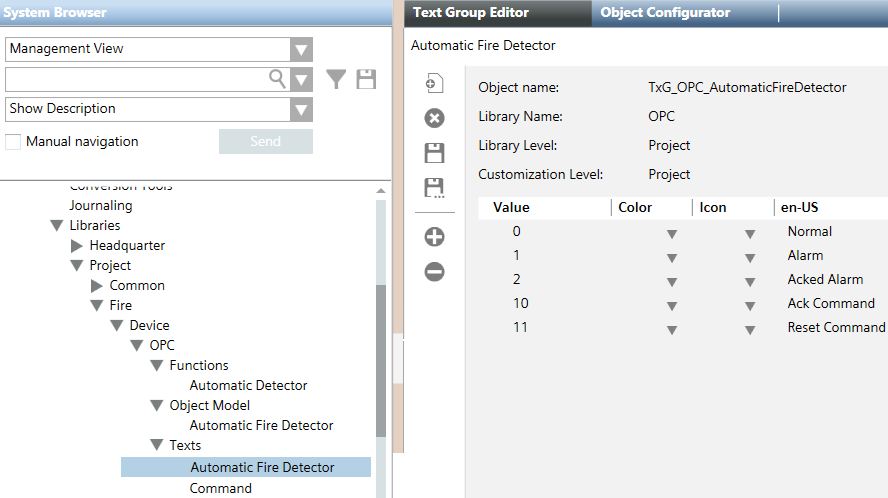
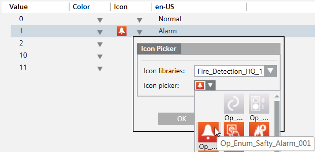

Configure OPC Fire Text Groups
- In the customized OPC library, under Texts, select a text group (for example, Automatic Fire Detector).
- Click the Text Group Editor tab.
- Type in the values you need and a descriptive text for each value. See Figure Text Group Configuration With Output and Input Values of the OPC Server for an example, where values 0 to 2 are input values (values which come from the OPC server representing the fire system: Normal, Alarm, Acked Alarm) and values 10 and 11 are output values (values which the OPC server waits for: Ack and Reset commands).
- Four value rows (values 0 to 3) are available by default.
- To type in or modify a value or a descriptive text, click in the respective column of the value row to show the text field.
- To add a value, click Add new row
 .
. - To delete a value, select the value and click Delete selected row
 .
. - (Optional) Assign an icon to a value.
a. Click to show the Icon Picker.
b. Select a fire icon library, for example the Fire_Detection_HQ_1 library.
c. Select the icon.
d. Click OK. - Click Save
 .
. - Repeat the procedure for all text groups for which it is necessary to provide specific texts for the values, including the Command text group for command-specific values (if needed).

